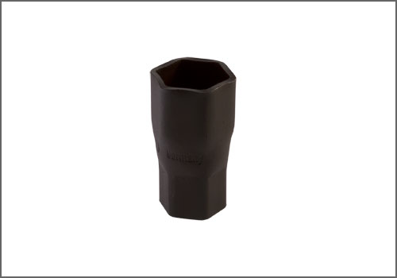

Alternator Pulley / Clutch: Tools and Equipment
Alternator Pulley Socket
AST tool# 127110

Socket used for removing and installing the Alternator Pulley. Used on vehicles with the following engines: M10, M21, M40, M41, M42, M43, M44, M47, M47TU, M50, M51, M52, M57, M60, M62, M70, M73, S14, S50B30 and S50B32.
- Made in Germany
- Call AST for Pricing
Contact AST for pricing.
Assenmacher Specialty Tools
1-800-525-2943